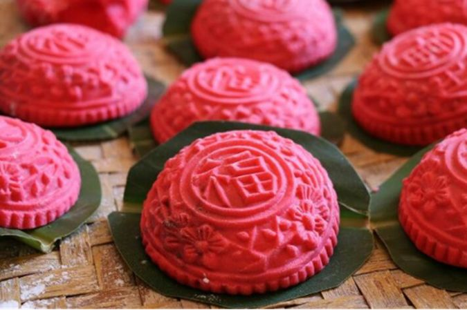
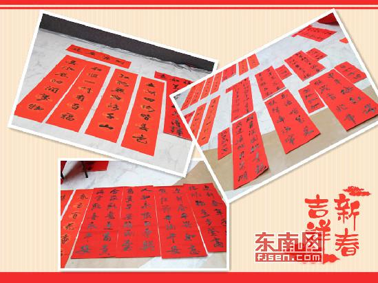
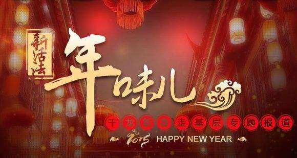
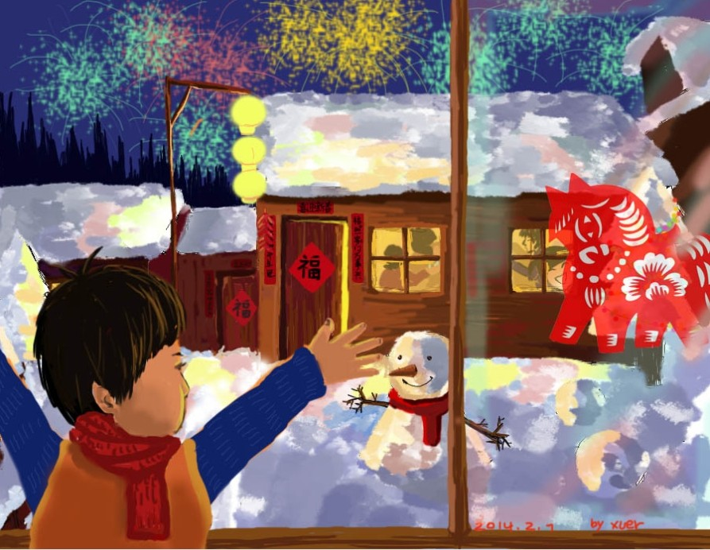
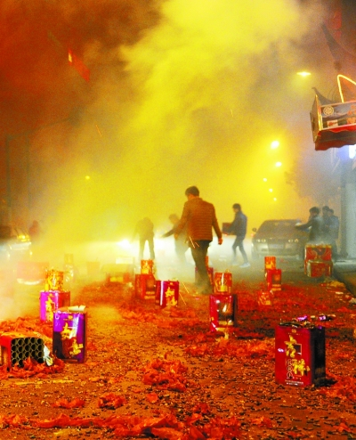

-

红团印等红团，而莆田年味在等你
红团，首先是它的颜色，最初的人们一定是有心灵契约的，才让它以这样的脸色登上了喜事的桌面。至于它的形状，那更是人们心中所渴盼的一种形态。这样一个与莆阳大众心愿相匹配的...
-

写春联
“万马扬蹄踏凯歌而去，群羊翘首唤春信即来”。由桃符发展而来的春联，言简意深，对仗工整，平仄协调，以汉字和中国书法完美结合的艺术形式，表达着人们对生活、对生命的所有赞美和祝愿。那些或...
-

父母在，年味就在
今年的红团做的特别早。刚回娘家，就见到第一炊红团已经上锅了。柴火灶里的柴火噼噼啪啪地响着，摇曳的焰火印照在父亲消瘦的脸上，皱纹更深了，笑意更浓了。哥哥还没放假，母亲和妹妹在里屋忙着...
-

儿时的莆田年味
当生活节奏越来越紧凑，物质条件越来越宽裕，我们在繁忙的工作中常常忘记了放慢奔波的脚步。正是有了春节这个最重要的节日，人们有了幸福的微澜，有了人生的回味。
-

最忆是老街
“台湾歌手罗大佑在一首怀旧歌曲《鹿港小镇》中唱道：“我家就住在妈祖庙的后面，卖着香火的那家小杂货店。”恰巧寒舍所在的东大路与妈祖庙——文峰宫近在咫尺，家父家母早年亦在此地挑担贩货辛...
-

放炮游春
正月即农历一月。莆田方言保持阴平调读法。这是源于避秦始皇嬴政讳而把去声改为阴平的读法。在山区曾传唱一首名为《长年诗》的俚歌，其“正月”唱道：正月出来正沉沉!